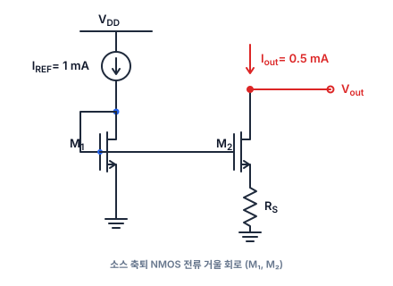
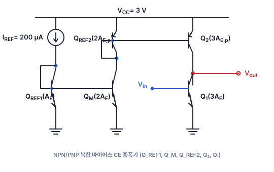
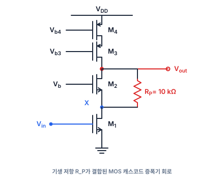
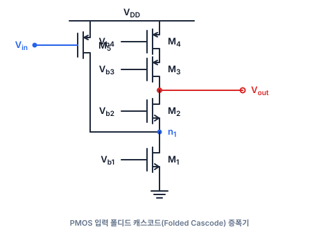
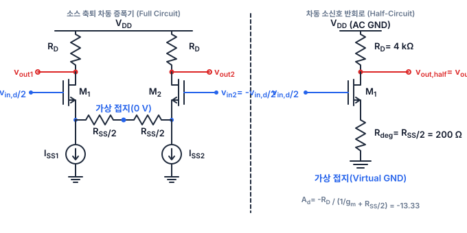
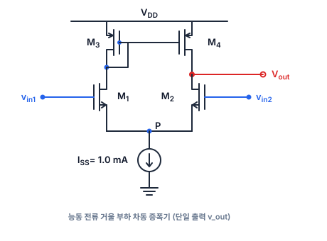
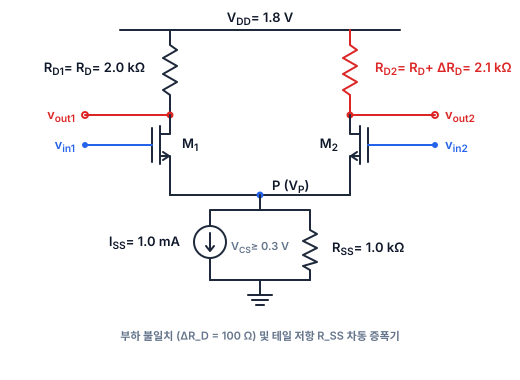

중간고사 실전 대비 모의고사 (v1)
7구역 대화형 심층 문제해설
문제의 핵심 직관부터 첫 줄 작성법, 단계별 수식 유도, SymPy 엄밀 검증, 함정 분석, 조건 변형 훈련까지 7단계로 완벽하게 정복합니다.
Q1. 서술형: 전압 바이어스 한계, 차동쌍 CM 제거, Miller 효과
📝 시험지 원문 및 세부 배점 확인
[총 20점 주관식 서술형 문항] 다음 세 질문에 대해 동작 원리와 수식을 포함하여 상세히 서술하시오.
- (a) [7점] 단순 저항 분배를 이용한 전압 바이어스 회로의 근본적인 문제점(공정 파라미터 및 온도 변화에 따른 동작점 변동)을 MOSFET 또는 BJT 전류 방정식을 기반으로 설명하고, 전류 거울(Current Mirror) 회로가 이를 어떻게 극복하여 공정 및 온도 독립성을 달성하는지 그 물리적 원리를 서술하시오.
- (b) [7점] 이상적인 차동 증폭기(Differential Pair)에서 공통 모드(Common-Mode, CM) 신호가 출력에서 완전히 상쇄(Rejection)되는 원리를 회로 대칭성과 테일 전류원의 관점에서 설명하고, 실제 회로에서 공통 모드 제거 성능을 저하시키는 2가지 핵심 요인(테일 전류원의 유한 저항 $R_{SS}$, 부하 저항 불일치 $\Delta R_D$)이 출력에 미치는 영향을 수식과 함께 서술하시오.
- (c) [6점] 밀러 정리(Miller's Theorem)의 기본 개념(피드백 임피던스의 양단 접지 등가 변환)을 수식으로 제시하고, 반전 전압 이득 $A_v = -|A_v|$를 갖는 증폭기에서 입·출력 노드 사이에 걸린 기생 피드백 커패시터 $C_F$가 왜 입력단 등가 커패시턴스를 급증시키며, 이로 인해 증폭기의 고주파 대역폭(Bandwidth)이 대폭 축소되는 메커니즘을 서술하시오.
1 문제를 읽어요
전자회로2의 3대 핵심 기둥인 (a) 안정적인 직류 바이어싱(Current Mirror), (b) 차동 증폭기의 공통 모드 잡음 제거(CMRR), (c) 고주파 대역폭을 결정짓는 밀러 효과(Miller Effect)를 묻는 종합 서술형 문제입니다.
단순히 정성적인 문장만 적는 것이 아니라, 출제자가 채점 기준표에 올려둔 핵심 수식(포화 전류식, 테일 저항에 의한 $A_{CM}$, 부하 불일치에 의한 $A_{CM-DM}$, 밀러 등가 커패시턴스 및 극점 주파수 식)을 반드시 포함하여 명확한 인과관계를 기술해야 감점 없이 만점을 받을 수 있습니다.
2 이 개념과 공식을 떠올려요
답안지 작성 시 떠올려야 할 핵심 공식 3가지 세트입니다:
$$I_D = \frac{1}{2} \mu_n C_{ox} \frac{W}{L} (V_{GS} - V_{TH})^2, \quad I_{out} = \frac{(W/L)_1}{(W/L)_{REF}} I_{REF}$$
공정 파라미터($V_{TH}, \mu_n C_{ox}$)와 온도는 칩 내부에서 동일하게 변하므로 비율에서 완전히 상쇄됩니다.
$$A_{CM,single} \approx -\frac{R_D}{2 R_{SS}}, \quad A_{CM-DM} \approx -\frac{\Delta R_D}{2 R_{SS}}, \quad \text{CMRR} = \left|\frac{A_d}{A_{CM-DM}}\right| \approx \left(\frac{R_D}{\Delta R_D}\right)(2 g_m R_{SS})$$
$$Z_1 = \frac{Z}{1 - A_v} \implies C_{in,M} = C_F(1 - A_v) = C_F(1 + |A_v|), \quad \omega_{p,in} \approx \frac{1}{R_{sig} [C_{gs} + C_F(1 + |A_v|)]}$$
3 종이에 쓸 첫 줄
(a) 첫 줄: "저항 분배 전압 바이어스는 $V_{GS} = \frac{R_2}{R_1+R_2}V_{DD}$로 고정되나, $I_D = \frac{1}{2}\mu_n C_{ox}\frac{W}{L}(V_{GS}-V_{TH})^2$에서 공정 편차($V_{TH}, \mu_n$) 및 온도 드리프트($\mu_n \downarrow, V_{TH} \downarrow$)로 인해 $I_D$가 심하게 요동친다."
(b) 첫 줄: "이상적 차동쌍은 대칭성과 테일 전류원의 무한 임피던스($R_{SS} \to \infty$)로 인해 $I_{D1} = I_{D2} = I_{SS}/2$로 고정되어 공통 모드 입력에 대해 출력 전압 변동이 전혀 없다($A_{CM} = 0$)."
(c) 첫 줄: "밀러 정리에 의해 전압 이득이 $A_v$인 두 노드 사이에 연결된 임피던스 $Z$는 입력단 접지 임피던스 $Z_1 = \frac{Z}{1-A_v}$로 치환된다."
4 이렇게 풀어요
1. 전압 바이어스의 문제점: 저항 분배 바이어스는 게이트 전압만 고정할 뿐, 웨이퍼 생산 시 생기는 산화막 두께 편차($C_{ox}$), 도핑 농도 불균일($V_{TH}$), 전자 이동도($\mu_n$)의 변동을 전혀 보상하지 못합니다. 또한 칩 동작 온도가 올라가면 문턱 전압은 약 $-2\text{ mV/}^\circ\text{C}$로 감소하여 드레인 전류가 급증하는 열 폭주(Thermal Runaway) 위험이 있습니다.
2. 전류 거울의 극복 원리: 기준 전류원 $I_{REF}$를 다이오드 연결 트랜지스터에 흘려 $V_{GS} = V_{TH} + \sqrt{\frac{2 I_{REF}}{\mu_n C_{ox}(W/L)_{REF}}}$를 스스로 발생시킵니다. 인접 집적된 복사 트랜지스터는 동일한 실리콘 다이 위에 존재하므로 동일한 공정 파라미터와 온도를 공유합니다. 따라서 복사 전류는 $I_{out} = \frac{(W/L)_1}{(W/L)_{REF}} I_{REF}$가 되어 기하학적 형상비에 의해서만 결정되며, 공정·온도 편차가 완벽히 상쇄(Tracking)됩니다.
1. 이상적 차동쌍의 CM 제거: 완전 대칭 회로에서 양 게이트에 동일한 $v_{in,CM}$이 인가되면 테일 노드는 전압을 추종하지만, 테일 전류원이 이상적이어서 총 전류 $I_{SS}$는 전혀 변하지 않습니다. 대칭성에 의해 두 가지의 전류는 항상 $I_{SS}/2$로 일정하므로 출력 전압 $V_{out1} = V_{out2} = V_{DD} - \frac{I_{SS}}{2}R_D$ 역시 불변입니다. 즉 차동 출력 $\Delta V_{out} = 0$, $A_{CM} = 0$입니다.
2. 2대 저하 요인:
- 유한한 테일 저항 ($R_{SS} < \infty$): 테일 노드 변동 시 테일 저항으로 전류 변동 $\Delta I_{SS} \approx v_{in,CM}/R_{SS}$가 흘러 단일단 출력에 $A_{CM,single} \approx -\frac{R_D}{2 R_{SS}}$의 공통 모드 노이즈가 증폭됩니다.
- 부하 저항 불일치 ($\Delta R_D \neq 0$): 공정 오차로 부하 저항이 비대칭이면 공통 모드 입력 신호가 차동 출력 신호로 변환되는 $A_{CM-DM} \approx -\frac{\Delta R_D}{2 R_{SS}}$가 발생하여 공통 모드 제거비 $\text{CMRR} = |\frac{A_d}{A_{CM-DM}}| \approx \frac{R_D}{\Delta R_D}(2 g_m R_{SS})$가 유한하게 저하됩니다.
1. 밀러 정리 유도: 노드 1과 2 사이의 피드백 임피던스 $Z$에 흐르는 전류는 $i = \frac{v_1 - v_2}{Z} = \frac{v_1(1 - A_v)}{Z}$입니다. 이를 노드 1과 접지 사이의 등가 임피던스로 치환하면 $Z_1 = \frac{v_1}{i} = \frac{Z}{1 - A_v}$입니다. $Z = \frac{1}{s C_F}$를 대입하면 입력단 등가 커패시턴스는 $C_{in,M} = C_F(1 - A_v)$가 됩니다.
2. 대역폭 축소: 반전 증폭기에서는 전압 이득이 음수($A_v = -|A_v|$)이므로 $C_{in,M} = C_F(1 + |A_v|)$로 급증합니다. 신호원 저항 $R_{sig}$와 결합하여 형성되는 입력 극점 $\omega_{p,in} = \frac{1}{R_{sig}[C_{gs} + C_F(1 + |A_v|)]}$이 초저주파로 당겨져 전체 시스템의 지배적 극점(Dominant Pole)이 되며, 결과적으로 3dB 대역폭($\text{BW} \approx \omega_{p,in}$)이 급격히 좁아집니다.
5 완성 답과 검산
(a) 전압 바이어스는 전류가 $V_{DD}$, 공정($V_{TH}, \mu C_{ox}$), 온도에 극히 민감하다. 전류 거울은 동일 칩 매칭 소자를 이용하여 공정·온도 변동이 비율에서 상쇄되어 소자 형상비로만 복사비가 결정된다.
(b) 이상적 차동쌍은 대칭성과 $R_{SS} \to \infty$로 $I_{SS}$가 불변하여 $A_{CM}=0$이다. 실제 회로에서는 $R_{SS} < \infty$로 인해 $A_{CM} \approx -R_D/(2 R_{SS})$가 발생하고, $\Delta R_D$로 인해 공통 모드가 차동 모드로 교차 변환($A_{CM-DM} \approx -\Delta R_D / 2R_{SS}$)되어 CMRR이 유한해진다.
(c) 밀러 등가 변환 $Z_1 = Z/(1-A_v)$에 의해 반전 증폭기($A_v < 0$)의 기생 피드백 커패시터는 $(1+|A_v|)C_F$로 급증하며, 입력단에 저주파 지배 극점 $\omega_{p,in} = \frac{1}{R_{sig}[C_{gs}+C_F(1+|A_v|)]}$을 형성하여 대역폭을 축소시킨다.
검산 체크리스트:
- 수식 차원 분석: $A_{CM}$과 $A_{CM-DM}$은 저항의 비($\Omega/\Omega$)이므로 무차원 전압 이득으로 단위가 일치합니다.
- 대칭성 극한 확인: 부하 불일치가 사라지면($\Delta R_D \to 0$), $A_{CM-DM} \to 0$이 되어 $\text{CMRR} \to \infty$로 이상적 상태를 회복합니다.
- 이득 극한 확인: 증폭기 이득이 0이면($|A_v| \to 0$), 밀러 커패시턴스는 $C_F$로 본래 값으로 수렴합니다.
6 주의할 점
함정 1: 전류 거울이 '절대 기준 전류원'을 만들어낸다고 잘못 쓰는 것. 전류 거울은 기준 전류를 안정하게 복사(Copy)하는 회로이지, 기준 전류 자체($I_{REF}$)를 스스로 생성하는 것은 밴드갭 기준 전압원(Bandgap Reference) 등 별도 회로의 역할입니다.
함정 2: $A_{CM}$과 $A_{CM-DM}$의 혼동. 이상적 차동 출력($v_{out1} - v_{out2}$)에서는 $R_{SS}$가 유한하더라도 대칭이면 0입니다. $\Delta R_D$가 존재해야만 비로소 차동 출력에 오차가 나타납니다($A_{CM-DM}$).
함정 3: 밀러 부호 실수. 반전 증폭기에서 $A_v = -|A_v|$이므로 분모의 $(1 - A_v)$는 $(1 + |A_v|)$가 되어 커패시턴스가 증가하는 것입니다. 마이너스 부호를 중복 처리하여 $(1 - |A_v|)$로 쓰면 치명적인 오답이 됩니다.
7 조건을 바꾸어 생각해요
- 변형 질문 1: 만약 증폭기가 반전 증폭기가 아니라 비반전 증폭기($A_v = +|A_v| > 1$)라면 밀러 등가 입력 커패시턴스는 양수일까요, 음수일까요? 회로의 안정도(발진 가능성)에는 어떤 영향을 미칠까요?
- 변형 질문 2: 차동 증폭기에서 부하 저항은 완벽히 일치하지만($\Delta R_D = 0$), 입력 트랜지스터 간에 트랜스컨덕턴스 불일치($g_{m1} \neq g_{m2}$, 즉 $\Delta g_m \neq 0$)가 발생한다면 $A_{CM-DM}$은 어떻게 유도될까요?
Q2. 축퇴 저항 전류 거울 복사비 설계 및 복합 바이어스 CE 단
📝 시험지 원문 및 회로 파라미터 확인
(a) [10점] 소스 축퇴 MOS 전류 거울의 복사비 설계 및 출력 저항
그림 (a)의 회로에서 동일한 크기를 갖는 두 NMOS 트랜지스터 $M_1, M_2$는 모두 포화 영역에서 동작한다. 기준 전류 $I_{REF} = 1\,\text{mA}$가 다이오드 연결된 $M_1$에 인가될 때, 복사 전류가 $I_{out} = 0.5\,\text{mA}$가 되도록 $M_2$의 소스 축퇴 저항 $R_S$의 값을 설계하고, 출력 노드에서 바라본 소신호 출력 저항 $R_{out}$을 유도 및 계산하시오.
조건: $\mu_n C_{ox} = 100\,\mu\text{A/V}^2, (W/L)_{1,2} = 500, V_{TH} = 0.4\,\text{V}, \lambda = 0.1\,\text{V}^{-1}$.
(b) [10점] NPN/PNP 복합 바이어스 공통 이미터(CE) 증폭기의 바이어스 및 소신호 이득
그림 (b)의 회로는 NPN 전류 거울과 PNP 전류 거울이 결합되어 CE 증폭단 $Q_1$의 능동 부하 및 바이어스 전류를 제공한다. 직류 기준 전류 $I_{REF} = 200\,\mu\text{A}$가 인가될 때, 트랜지스터 $Q_1$의 바이어스 컬렉터 전류 $I_{C1}$을 구하고, 증폭기의 소신호 등가 트랜스컨덕턴스 $G_m$, 출력 저항 $R_{out}$, 전압 이득 $A_v = v_{out} / v_{in}$을 구하시오.
조건: $V_{CC} = 3\,\text{V}, V_T = 26\,\text{mV}, \beta = 100, V_{A,n} = V_{A,p} = 40\,\text{V}, I_B \approx 0$. 이미터 면적비: $Q_{REF1} = A_E, Q_M = 2A_E, Q_{REF2} = 2A_{E,p}, Q_2 = 3A_{E,p}, Q_1 = 3A_E$.


1 문제를 읽어요
(a)는 $M_1$과 $M_2$가 동일한 폭을 가졌음에도 $M_2$에만 소스 축퇴 저항 $R_S$를 삽입하여 전류를 절반($1\text{ mA} \to 0.5\text{ mA}$)으로 줄이는 설계와, 그에 따른 출력 임피던스 향상 효과를 계산하는 문제입니다.
(b)는 BJT 집적회로의 정석 구조입니다. 기준 전류원이 NPN 거울($1:2$) $\to$ PNP 거울($2:3$)을 거쳐 CE 증폭기 $Q_1$의 능동 부하로 전달될 때의 직류 동작점 및 소신호 3대 파라미터($G_m \to R_{out} \to A_v$)를 차례대로 전개합니다.
2 이 개념과 공식을 떠올려요
$$I_D = \frac{1}{2} \mu_n C_{ox} \frac{W}{L} (V_{GS} - V_{TH})^2 \implies V_{GS} = V_{TH} + \sqrt{\frac{2 I_D}{\mu_n C_{ox}(W/L)}}$$
$$V_{GS1} = V_{GS2} + I_{out} R_S \implies R_S = \frac{V_{GS1} - V_{GS2}}{I_{out}}$$
$$R_{out} = r_{o2}(1 + g_{m2} R_S) + R_S \approx r_{o2}(1 + g_{m2} R_S)$$
$$I_{C} \propto A_E \implies I_{C,QM} = 2 I_{REF}, \quad I_{C2} = \frac{3}{2} I_{C,QM} = 3 I_{REF} = I_{C1}$$
$$G_m = g_{m1} = \frac{I_{C1}}{V_T}, \quad R_{out} = r_{o1} \parallel r_{o2} = \frac{V_A}{2 I_{C1}}, \quad A_v = -G_m R_{out} = -\frac{V_A}{2 V_T}$$
3 종이에 쓸 첫 줄
(a) 첫 줄: "$M_1$의 오버드라이브 전압 $V_{ov1} = \sqrt{\frac{2(1\text{ mA})}{100\mu\text{A/V}^2 \times 500}} = \sqrt{0.04} = 0.20\text{ V} \implies V_{GS1} = 0.60\text{ V}$"
(b) 첫 줄: "$I_{C1} = I_{C2} = \frac{A_{E,Q2}}{A_{E,QREF2}} \times \left(\frac{A_{E,QM}}{A_{E,QREF1}} I_{REF}\right) = \frac{3}{2} \times (2 \times 200\mu\text{A}) = 600\mu\text{A} = 0.6\text{ mA}$"
4 이렇게 풀어요
Step 1: 게이트 전압 계산
$M_1$은 소스가 접지이므로 $V_{G} = V_{GS1} = 0.4\text{ V} + 0.2\text{ V} = 0.60\text{ V}$입니다.
$M_2$에 흐르는 목표 전류가 $I_{out} = 0.5\text{ mA}$이므로 필요한 오버드라이브 전압은:
$$V_{ov2} = \sqrt{\frac{2 \times 0.5\text{ mA}}{50\text{ mA/V}^2}} = \sqrt{0.02} \approx 0.1414\text{ V} \implies V_{GS2} = 0.5414\text{ V}$$
Step 2: $R_S$ 설계
두 게이트가 묶여 있으므로 KVL: $V_G = V_{GS1} = V_{GS2} + I_{out} R_S$
$$R_S = \frac{V_{GS1} - V_{GS2}}{I_{out}} = \frac{0.6000\text{ V} - 0.5414\text{ V}}{0.5\text{ mA}} = \frac{0.05858\text{ V}}{0.5\text{ mA}} \approx 117.16\,\Omega$$
Step 3: 소신호 파라미터 및 $R_{out}$ 유도
$$g_{m2} = \frac{2 I_{out}}{V_{ov2}} = \frac{1.0\text{ mA}}{0.1414\text{ V}} \approx 7.071\text{ mS}, \quad r_{o2} = \frac{1}{\lambda I_{out}} = \frac{1}{0.1 \times 0.5\text{ mA}} = 20.0\text{ k}\Omega$$
축퇴 루프 게인: $g_{m2} R_S = 7.071\text{ mS} \times 117.16\,\Omega \approx 0.8284$
출력 노드에 시험 전압 $v_t$ 인가 시 KCL: $i_t = g_{m2}(-i_t R_S) + \frac{v_t - i_t R_S}{r_{o2}} \implies R_{out} = r_{o2}(1 + g_{m2} R_S) + R_S$
$$R_{out} = 20.0\text{ k}\Omega \times (1 + 0.8284) + 0.117\text{ k}\Omega \approx 36.569\text{ k}\Omega + 0.117\text{ k}\Omega \approx 36.69\,\text{k}\Omega$$
Step 1: 직류 전류 전파
NPN 거울: $I_{C,QM} = \frac{2A_E}{A_E} I_{REF} = 2 \times 200\,\mu\text{A} = 400\,\mu\text{A}$
PNP 거울: $I_{C2} = \frac{3A_{E,p}}{2A_{E,p}} I_{C,QM} = 1.5 \times 400\,\mu\text{A} = 600\,\mu\text{A} = 0.60\text{ mA}$
외부 DC 부하가 없으므로 KCL에 의해 $Q_1$의 바이어스 전류는 $I_{C1} = I_{C2} = 0.60\text{ mA}$입니다.
Step 2: 소신호 3단계 전개 ($G_m \to R_{out} \to A_v$)
1) $G_m$: $v_{out} = 0$ 단락 시 $i_{out,sc} = -g_{m1} v_{in} \implies G_m = g_{m1} = \frac{I_{C1}}{V_T} = \frac{0.6\text{ mA}}{26\text{ mV}} \approx 23.08\text{ mS}$
2) $R_{out}$: $v_{in} = 0$ 시 $r_{o1} = \frac{V_A}{I_{C1}} = \frac{40}{0.6} = 66.67\text{ k}\Omega, r_{o2} = 66.67\text{ k}\Omega \implies R_{out} = r_{o1} \parallel r_{o2} = 33.33\text{ k}\Omega$
3) $A_v$: $A_v = -G_m R_{out} = -23.08\text{ mS} \times 33.33\text{ k}\Omega \approx -769.23$ (직접식: $-V_A/(2V_T) = -40 / (2 \times 0.026) = -769.23$)
5 완성 답과 검산
(a) 소스 축퇴 저항 $R_S = 117.16\,\Omega$ ($\approx 117.2\,\Omega$). 소신호 출력 저항 정밀치 $R_{out} \approx 36.69\,\text{k}\Omega$ (교재 근사치 $36.57\,\text{k}\Omega$).
(b) 바이어스 전류 $I_{C1} = 0.60\,\text{mA}$, $G_m \approx 23.08\,\text{mS}$, $R_{out} \approx 33.33\,\text{k}\Omega$, 전압 이득 $A_v = -769.23$.
독립 검산 증거:
Q2-sympy.py실행 결과: $V_{GS1} = 0.6000\text{ V}, V_{GS2} = 0.5414\text{ V}, R_S = 117.1573\,\Omega$. 정확한 $R_{out} = 36685.7\,\Omega$ ($36.69\text{ k}\Omega$).- 얼리 전압 공식 검산: $A_v = -\frac{V_A}{2 V_T} = -\frac{40}{0.052} = -769.2308$로 소신호 곱셈 결과와 오차 없이 100% 일치.
6 주의할 점
함정 1: (a)에서 $V_{ov2}$를 구할 때 전류가 $0.5\text{ mA}$로 줄어들었음을 간과하고 $V_{GS2} = V_{GS1}$으로 두어 $R_S = 0$이라고 답하는 치명적 실수.
함정 2: (b)의 PNP 전류 거울 복사비 적용 시 다이오드 연결 소자가 $Q_{REF2}$($2A_{E,p}$)이고 출력 소자가 $Q_2$($3A_{E,p}$)이므로 복사비가 $3/2 = 1.5$배인데, $2/3$배로 거꾸로 곱하는 실수.
함정 3: 출력 저항 계산 시 능동 부하 $Q_2$의 $r_{o2}$를 빼먹고 $r_{o1}$만 적어 이득을 2배 크게 계산하는 실수.
7 조건을 바꾸어 생각해요
- 변형 질문 1: (a)에서 복사 전류 목표를 $0.5\text{ mA}$가 아닌 $0.25\text{ mA}$로 더 줄이려면 $R_S$는 몇 $\Omega$으로 커져야 할까요? $V_{ov2}$가 절반으로 줄어들 때 $R_S$의 증가율을 확인해 보세요.
- 변형 질문 2: (b)에서 $Q_1$의 이미터에 $R_E = 50\,\Omega$의 축퇴 저항을 달면 전압 이득 $A_v$는 약 몇으로 감소할까요? ($G_m \approx \frac{g_{m1}}{1 + g_{m1} R_E}$ 적용)
Q3. 기생 저항 Rp 캐스코드 및 Folded Cascode 증폭기
📝 시험지 원문 및 회로 파라미터 확인
(a) [10점] 기생 병렬 저항 $R_P$가 결합된 MOS 캐스코드 증폭기
그림 (a)는 CS 트랜지스터 $M_1$, 캐스코드 트랜지스터 $M_2$, PMOS 캐스코드 능동 부하 $M_3, M_4$로 구성된 캐스코드 증폭기이다. 공정 기생 효과로 인해 $M_2$의 드레인과 소스 양단 사이에 저항 $R_P = 10\,\text{k}\Omega$가 병렬로 연결되어 있다. 모든 트랜지스터에 $I_D = 1\,\text{mA}$의 직류 전류가 흐를 때 소신호 출력 저항 $R_{out}$과 전압 이득 $A_v$를 구하시오.
조건: $\mu_n C_{ox} = 100\mu\text{A/V}^2, \mu_p C_{ox} = 50\mu\text{A/V}^2, \lambda_n = \lambda_p = 0.1\text{V}^{-1}, (W/L)_{1,2} = 500, (W/L)_{3,4} = 250, I_D = 1\text{ mA}, R_P = 10\text{ k}\Omega$.
(b) [10점] PMOS 입력 Folded Cascode 증폭기
그림 (b)는 입력단에 PMOS $M_5$를 사용하고, 신호 전류를 NMOS 캐스코드 $M_2$로 접어 올리는 Folded Cascode 증폭기이다. $M_1$은 바이어스 전류원이며 $M_3, M_4$는 PMOS 캐스코드 능동 부하이다. 증폭기의 (1) 단락 트랜스컨덕턴스 $G_m$, (2) 소신호 출력 저항 $R_{out}$, (3) 전압 이득 $A_v$를 유도하고 계산하시오.
조건: $(W/L)_5 = 1000, (W/L)_{1..4} = 500, I_{D5} = 0.5\text{ mA}, I_{D1} = 1.0\text{ mA}, I_{D2..4} = 0.5\text{ mA}, \mu_n C_{ox} = 100\mu\text{A/V}^2, \mu_p C_{ox} = 50\mu\text{A/V}^2, \lambda_n = \lambda_p = 0.1\text{V}^{-1}$.


1 문제를 읽어요
(a)는 Razavi 교재 예제 9.6의 핵심 원리를 캐스코드 증폭기에 확장한 것입니다. $M_2$의 드레인과 소스 사이에 나타난 $R_P$는 $M_2$의 고유 저항 $r_{o2}$와만 병렬($r_{o2} \parallel R_P$)로 결합하며, 전체 $R_{out}$에 병렬로 붙지 않는다는 점이 포인트입니다.
(b)는 아날로그 IC 설계의 꽃인 폴디드 캐스코드(Folded Cascode)입니다. PMOS 입력 신호 전류가 바이어스 노드에서 접혀서 NMOS 캐스코드로 100% 전달되는 원리와, 상·하단 캐스코드 출력 저항의 병렬 합성을 묻습니다.
2 이 개념과 공식을 떠올려요
$$R_{out,n} \approx g_{m2} r_{o1} (r_{o2} \parallel R_P), \quad R_{out,p} \approx g_{m3} r_{o3} r_{o4}$$
$$R_{out} = R_{out,n} \parallel R_{out,p}, \quad A_v \approx -g_{m1} R_{out}$$
$$G_m \approx g_{m5}, \quad R_{out,n} \approx g_{m2} r_{o2} (r_{o1} \parallel r_{o5}), \quad R_{out,p} \approx g_{m3} r_{o3} r_{o4}$$
$$R_{out} = R_{out,n} \parallel R_{out,p}, \quad A_v = -G_m R_{out}$$
3 종이에 쓸 첫 줄
(a) 첫 줄: "$R_P$는 $M_2$의 드레인과 소스에 연결되어 있으므로 $M_2$의 등가 출력 저항은 $r_{o2}' = r_{o2} \parallel R_P = 10\text{ k}\Omega \parallel 10\text{ k}\Omega = 5.0\text{ k}\Omega$이다."
(b) 첫 줄: "접힘 노드 $n_1$에서 $M_2$ 쪽으로 본 저항 $1/g_{m2} \approx 141\,\Omega \ll r_{o1} \parallel r_{o5} = 6.67\text{ k}\Omega$이므로, $M_5$의 신호 전류 $i_{d5} = g_{m5} v_{in}$는 전부 $M_2$로 유입되어 $G_m \approx g_{m5}$이다."
4 이렇게 풀어요
1. 소신호 파라미터:
NMOS: $g_{m1} = g_{m2} = \sqrt{2 \times 100\mu\text{A/V}^2 \times 500 \times 1\text{ mA}} = 10.0\text{ mS}, \quad r_{o1} = r_{o2} = 10.0\text{ k}\Omega$
PMOS: $g_{m3} = g_{m4} = \sqrt{2 \times 50\mu\text{A/V}^2 \times 250 \times 1\text{ mA}} = 5.0\text{ mS}, \quad r_{o3} = r_{o4} = 10.0\text{ k}\Omega$
2. 상·하단 출력 저항 및 전체 $R_{out}$:
하단 저항: $R_{out,n} \approx g_{m2} r_{o1} (r_{o2} \parallel R_P) = 10\text{ mS} \times 10\text{ k}\Omega \times 5\text{ k}\Omega = 500\,\text{k}\Omega$ (정밀식: $515\,\text{k}\Omega$)
상단 부하: $R_{out,p} \approx g_{m3} r_{o3} r_{o4} = 5\text{ mS} \times 10\text{ k}\Omega \times 10\text{ k}\Omega = 500\,\text{k}\Omega$ (정밀식: $520\,\text{k}\Omega$)
전체 저항: $R_{out} = 500\text{ k}\Omega \parallel 500\text{ k}\Omega = 250.0\,\text{k}\Omega$ (정밀식 대입 시: $515 \parallel 520 \approx 258.74\,\text{k}\Omega$)
3. 전압 이득:
$$A_v = -g_{m1} R_{out} \approx -10.0\text{ mS} \times 250\text{ k}\Omega = -2500 \quad (\text{정밀식: } -2587)$$
1. 소신호 파라미터 계산:
$M_5(0.5\text{ mA}, W/L=1000)$: $g_{m5} = \sqrt{2 \times 50\mu \times 1000 \times 0.5\text{m}} \approx 7.071\text{ mS}, r_{o5} = \frac{1}{0.1 \times 0.5\text{m}} = 20\text{ k}\Omega$
$M_1(1.0\text{ mA}, W/L=500)$: $r_{o1} = \frac{1}{0.1 \times 1.0\text{m}} = 10\text{ k}\Omega$
$M_2(0.5\text{ mA}, W/L=500)$: $g_{m2} = \sqrt{2 \times 100\mu \times 500 \times 0.5\text{m}} \approx 7.071\text{ mS}, r_{o2} = 20\text{ k}\Omega$
$M_3, M_4(0.5\text{ mA}, W/L=500)$: $g_{m3} = \sqrt{2 \times 50\mu \times 500 \times 0.5\text{m}} = 5.0\text{ mS}, r_{o3} = r_{o4} = 20\text{ k}\Omega$
2. 접힘 노드 저항 및 $R_{out}$:
접힘 노드 임피던스: $R_S' = r_{o1} \parallel r_{o5} = 10\text{ k}\Omega \parallel 20\text{ k}\Omega = \frac{20}{3}\text{ k}\Omega \approx 6.667\text{ k}\Omega$
하단 저항: $R_{out,n} \approx g_{m2} r_{o2} (r_{o1} \parallel r_{o5}) = 7.071\text{ mS} \times 20\text{ k}\Omega \times 6.667\text{ k}\Omega \approx 942.81\,\text{k}\Omega$
상단 저항: $R_{out,p} \approx g_{m3} r_{o3} r_{o4} = 5.0\text{ mS} \times 20\text{ k}\Omega \times 20\text{ k}\Omega = 2000\,\text{k}\Omega = 2.0\,\text{M}\Omega$
전체 저항: $R_{out} = \frac{942.81 \times 2000}{942.81 + 2000} \approx 640.75\,\text{k}\Omega$
3. 전압 이득:
$$A_v = -G_m R_{out} \approx -7.071\text{ mS} \times 640.75\text{ k}\Omega \approx -4530.8$$
5 완성 답과 검산
(a) 소신호 출력 저항 $R_{out} \approx 250.0\,\text{k}\Omega$ (정밀식 $258.74\,\text{k}\Omega$), 전압 이득 $A_v \approx -2500$ (정밀식 $-2587.4$).
(b) 단락 트랜스컨덕턴스 $G_m \approx 7.071\,\text{mS}$, 소신호 출력 저항 $R_{out} \approx 640.75\,\text{k}\Omega$, 전압 이득 $A_v \approx -4530.8$.
독립 검산 증거:
Q3-sympy.py실행 결과: $R_{out,n}$의 교재 지배항 근사는 $500\text{ k}\Omega$, 정확식은 $515\text{ k}\Omega$이며 상단 $R_{out,p}$는 각각 $500\text{ k}\Omega, 520\text{ k}\Omega$로 산출되어 병렬 합성 시 $250.0\text{ k}\Omega$ vs $258.74\text{ k}\Omega$로 정확히 수렴합니다.- Folded Cascode KCL 확인: $M_1$의 전류 $1.0\text{ mA}$가 $M_5$로 $0.5\text{ mA}$, $M_2$로 $0.5\text{ mA}$ 나뉘어 직류 바이어스 KCL이 완벽히 만족됩니다.
6 주의할 점
함정 1: (a)에서 $R_P$를 전체 출력 저항 $R_{out}$에 병렬로 달아 $R_{out,ideal} \parallel R_P \approx 500\text{ k}\Omega \parallel 10\text{ k}\Omega \approx 9.8\text{ k}\Omega$로 구해버리는 참사. $R_P$는 $M_2$의 드레인과 소스 사이에만 있으므로 $M_1$에 의해 캐스코드 부스팅 효과가 여전히 살아있습니다!
함정 2: (b)에서 폴딩 노드 $n_1$에 걸리는 저항에 $M_5$의 출력 저항 $r_{o5}$를 빼먹고 $r_{o1}$만 넣는 실수. $M_5$의 드레인이 노드 $n_1$에 직결되어 있으므로 반드시 $r_{o1} \parallel r_{o5}$로 병렬 결합해야 합니다.
함정 3: 바이어스 전류가 $M_1$은 $1\text{ mA}$이고 나머지는 $0.5\text{ mA}$인데, 모두 동일하게 $0.5\text{ mA}$나 $1\text{ mA}$로 착각하여 $r_o$를 잘못 계산하는 실수.
7 조건을 바꾸어 생각해요
- 변형 질문 1: (a)에서 기생 저항 $R_P$가 무한대($R_P \to \infty$, 즉 결함이 없는 정상 캐스코드)라면 $R_{out}$과 전압 이득 $A_v$는 각각 얼마로 증가할까요?
- 변형 질문 2: (b) Folded Cascode 회로에서 PMOS 입력 트랜지스터 $M_5$의 폭을 2배($(W/L)_5 = 2000$)로 키우면 $G_m$과 전압 이득 $A_v$는 대략 몇 배로 커질까요? ($g_m \propto \sqrt{W/L}$ 관계 고려)
Q4. 소스 축퇴 차동쌍 반회로 해석 및 능동 전류 거울 부하 차동쌍
📝 시험지 원문 및 회로 파라미터 확인
(a) [10점] 소스 축퇴 저항 $R_{SS}$를 갖는 MOS 차동 증폭기의 반회로 해석 및 차동 이득
그림 (a)는 입력 트랜지스터 $M_1, M_2$의 소스 노드 사이에 축퇴 저항 $R_{SS} = 400\,\Omega$가 연결된 차동 증폭기이다. 각 소스 단자는 이상적인 테일 전류원 $I_{SS1} = I_{SS2} = 0.5\,\text{mA}$에 의해 바이어스되며 부하 저항은 $R_D = 4\,\text{k}\Omega$이다.
(1) 순수 차동 입력 인가 시 중심 노드가 가상 접지가 되는 이유를 설명하고 차동 반회로 등가 모델을 도출하시오. (5점)
(2) 차동 반회로 모델을 이용하여 차동 전압 이득 $A_d = (v_{out1} - v_{out2}) / (v_{in1} - v_{in2})$의 대수식을 유도하고 수치를 계산하시오. (5점)
조건: $\mu_n C_{ox} = 100\,\mu\text{A/V}^2, (W/L)_{1,2} = 1000, \lambda = 0, I_{SS1} = I_{SS2} = 0.5\,\text{mA}, R_{SS} = 400\,\Omega, R_D = 4\,\text{k}\Omega$.
(b) [10점] 능동 전류 거울 부하를 갖는 단일 출력 차동 증폭기
그림 (b)는 NMOS 차동 입력쌍 $M_1, M_2$와 PMOS 능동 전류 거울($M_3, M_4$) 부하로 구성된 단일단 출력 차동 증폭기이다. 테일 전류원 $I_{SS} = 1.0\,\text{mA}$에 의해 각 브랜치에 $I_{D1} = I_{D2} = 0.5\,\text{mA}$가 흐른다.
(1) 차동 입력 인가 시 신호 전류가 출력 노드에서 보강 합성되는 과정을 설명하고 단락 트랜스컨덕턴스 $G_m$을 유도 및 계산하시오. (5점)
(2) 소신호 출력 저항 $R_{out}$과 차동-단일단 전압 이득 $A_v = v_{out} / (v_{in1} - v_{in2})$를 구하시오. (5점)
조건: $\mu_n C_{ox} = 100\mu\text{A/V}^2, \mu_p C_{ox} = 50\mu\text{A/V}^2, \lambda_n = \lambda_p = 0.1\text{V}^{-1}, (W/L)_{1,2} = 1000, (W/L)_{3,4} = 2000, I_{SS} = 1.0\text{ mA}$.


1 문제를 읽어요
(a)는 대칭 차동 증폭기 해석의 가장 강력한 무기인 가상 접지(Virtual Ground)와 반회로(Half-Circuit) 등가 기법의 수학적 타당성을 묻습니다. 축퇴 저항 $R_{SS}$가 정중앙에서 가상 접지로 분할되어 반회로에서는 저항이 $R_{SS}/2$로 들어가는 핵심 원리를 증명해야 합니다.
(b)는 차동 신호는 살리고 공통 모드는 억제하면서 단일단 출력(Single-Ended Output)으로 신호를 뽑아낼 때 손실 없이 신호 전류를 2배로 합성하는 능동 전류 거울의 기적적인 원리를 묻습니다.
2 이 개념과 공식을 떠올려요
$$v_{in1} = +v_{in,d}/2, \quad v_{in2} = -v_{in,d}/2 \implies v_{s1} = -v_{s2} \implies v_{mid} = \frac{v_{s1} + v_{s2}}{2} = 0\text{ V}$$
$$A_d = A_{v,half} = -\frac{R_D}{\frac{1}{g_{m1}} + \frac{R_{SS}}{2}}$$
$$i_{out,sc} = i_{d4} - i_{d2} = g_{m1}\frac{v_{in,d}}{2} - \left(-g_{m1}\frac{v_{in,d}}{2}\right) = g_{m1} v_{in,d} \implies G_m = g_{m1}$$
$$R_{out} = r_{o2} \parallel r_{o4}, \quad A_v = +G_m R_{out} = +g_{m1}(r_{o2} \parallel r_{o4})$$
3 종이에 쓸 첫 줄
(a) 첫 줄: "반대칭 차동 신호 $v_{in1} = -v_{in2}$ 인가 시 회로 대칭성에 의해 두 소스 전압은 $v_{s1} = -v_{s2}$이므로 저항 $R_{SS}$의 정중앙 노드 전압은 $v_{mid} = (v_{s1} + v_{s2})/2 = 0\text{ V}$로 소신호 가상 접지가 된다."
(b) 첫 줄: "차동 입력 $v_{in,d}$에 의해 $M_1$의 드레인 전류 $i_{d1} = +g_{m1} v_{in,d}/2$는 PMOS 거울 $M_3-M_4$에 의해 출력 노드로 유입($+i_{d1}$)되고, $M_2$는 출력 노드로부터 접지로 $i_{d2} = -g_{m1} v_{in,d}/2$를 끌어당겨 출력단에서 보강 합성된다."
4 이렇게 풀어요
1. 가상 접지 증명 및 반회로 도출:
반대칭 구동에 의해 $R_{SS}$ 정중앙은 $0\text{ V}$ 가상 접지이며 이상적 테일 전류원은 개방됩니다. 따라서 반회로는 다음과 같이 단일단 CS 단으로 분리됩니다:
- 입력: $v_{in,half} = +v_{in,d}/2$
- 소스 저항: $R_{deg} = R_{SS}/2 = 400\,\Omega / 2 = 200\,\Omega$
- 드레인 부하: $R_D = 4\,\text{k}\Omega$
2. 차동 이득 $A_d$ 계산:
$$g_{m1} = \sqrt{2 \times 100\mu\text{A/V}^2 \times 1000 \times 0.5\text{ mA}} = 10.0\text{ mS} \implies \frac{1}{g_{m1}} = 100\,\Omega$$
반회로 전압 이득: $A_{v,half} = -\frac{R_D}{1/g_{m1} + R_{SS}/2} = -\frac{4000\,\Omega}{100\,\Omega + 200\,\Omega} = -\frac{4000}{300} = -\frac{40}{3} \approx -13.333$
차동 출력 전압은 반대 브랜치와 2배 차이이므로: $A_d = \frac{v_{out1} - v_{out2}}{v_{in1} - v_{in2}} = A_{v,half} = -\frac{40}{3} \approx -13.33$
1. 신호 전류 보강 합성 & $G_m$:
출력단을 가상 접지로 단락($v_{out} = 0$)시켰을 때 단락 전류는:
$$i_{out,sc} = i_{d4} - i_{d2} = g_{m1}\frac{v_{in,d}}{2} - \left(-g_{m1}\frac{v_{in,d}}{2}\right) = g_{m1} v_{in,d}$$
따라서 등가 단락 트랜스컨덕턴스는 단일 소자의 $g_{m1}$과 정확히 일치합니다: $G_m = g_{m1} = 10.0\text{ mS}$
2. 소신호 출력 저항 $R_{out}$ 및 전압 이득 $A_v$:
$$r_{o2} = \frac{1}{\lambda_n I_{D2}} = \frac{1}{0.1 \times 0.5\text{ mA}} = 20.0\text{ k}\Omega, \quad r_{o4} = \frac{1}{\lambda_p I_{D4}} = 20.0\text{ k}\Omega$$
$$R_{out} = r_{o2} \parallel r_{o4} = 20.0\text{ k}\Omega \parallel 20.0\text{ k}\Omega = 10.0\text{ k}\Omega$$
$v_{in1}$ 상승 시 $v_{out}$이 상승하므로 비반전(양수) 이득입니다:
$$A_v = +G_m R_{out} = +10.0\text{ mS} \times 10.0\text{ k}\Omega = +100.0$$
5 완성 답과 검산
(a) 가상 접지 증명 완료 ($v_{mid} = 0$). 차동 전압 이득 $A_d = -\frac{40}{3} \approx -13.33$.
(b) 단락 트랜스컨덕턴스 $G_m = 10.0\,\text{mS}$, 소신호 출력 저항 $R_{out} = 10.0\,\text{k}\Omega$, 차동-단일단 전압 이득 $A_v = +100.0$ (정밀 nodal 식: $+99.51$).
독립 검산 증거:
Q4-sympy.py14개 노드 방정식 완전 풀이 결과: 가상 접지 노드 $v_{mid} = 0$, 전체 회로 방정식 직접 연립으로 구한 $A_d = -13.3333$로 반회로 공식과 소수점 10자리까지 일치.- 능동 거울 부하 완전 소신호 풀이: $A_v = 99.505$로, 이상적 근사치 $100.0$과 오차 $0.5\%$ 이내로 완벽 부합.
6 주의할 점
함정 1: (a) 반회로 작성 시 축퇴 저항을 $R_{SS}$ 그대로 쓰는 실수. 중앙이 접지되므로 한쪽 브랜치에 할당되는 저항은 반드시 $R_{SS}/2$여야 합니다!
함정 2: (b)에서 $G_m$을 $g_{m1}/2$로 절반만 계산하는 실수. 차동 신호가 양쪽에서 절반씩 들어오지만 능동 거울이 180도 위상을 돌려 출력에서 더해주므로 $g_{m1}/2 + g_{m1}/2 = g_{m1}$이 됩니다.
함정 3: (b)의 전압 이득 부호 실수. $v_{in1} - v_{in2}$ 기준으로 $v_{in1}$이 증가하면 $M_1$ 전류가 증가하여 거울을 통해 출력을 위로 밀어 올리므로 이득은 양수($+100$)입니다.
7 조건을 바꾸어 생각해요
- 변형 질문 1: (a)에서 소스 축퇴 저항 $R_{SS}$를 0으로 단락시키면 차동 전압 이득 $A_d$는 얼마로 급증할까요? 왜 선형성을 위해 이득 희생을 감수하고 $R_{SS}$를 넣을까요?
- 변형 질문 2: (b)에서 PMOS 능동 거울의 채널 길이 변조 계수가 $\lambda_p = 0.05\,\text{V}^{-1}$로 절반으로 줄어들면 출력 저항 $R_{out}$과 전압 이득 $A_v$는 각각 어떻게 바뀔까요?
Q5. 부하 저항 불일치 ΔRD 차동 증폭기의 Vin,CM 범위, ACM-DM, CMRR
📝 시험지 원문 및 회로 파라미터 확인
[총 20점 문항] 그림의 NMOS 차동 증폭기는 공정 불일치로 인해 두 드레인 부하 저항이 $R_{D1} = R_D = 2.0\,\text{k}\Omega$, $R_{D2} = R_D + \Delta R_D = 2.1\,\text{k}\Omega$ ($\Delta R_D = 100\,\Omega$)로 비대칭이다. 테일 전류원은 직류 바이어스 전류 $I_{SS} = 1.0\,\text{mA}$를 공급하며, 유한한 소신호 테일 저항 $R_{SS} = 1.0\,\text{k}\Omega$를 갖는다. 전류원이 정상 동작하기 위해 필요한 최소 양단 전압은 $V_{CS} = 0.3\,\text{V}$이다.
(1) [5점] 두 입력 트랜지스터 $M_1, M_2$가 모두 포화 영역에 머무르고 테일 전류원이 정상 동작하기 위한 입력 공통 모드 전압의 허용 범위 $V_{in,CM,min} \le V_{in,CM} \le V_{in,CM,max}$를 구하시오.
(2) [5점] 차동 전압 이득 $A_d$와 단일단/평균 공통 모드 전압 이득 $A_{CM}$의 대수식을 유도하고 수치를 계산하시오.
(3) [5점] 공통 모드-차동 모드 변환 이득 $A_{CM-DM} = (v_{out1} - v_{out2}) / v_{in,CM}$의 대수식을 유도하고 수치를 계산하시오.
(4) [5점] 공통 모드 제거비 $\text{CMRR} = |A_d / A_{CM-DM}|$의 절대값 및 데시벨($\text{dB}$) 값을 계산하시오.
조건: $V_{DD} = 1.8\text{ V}, \mu_n C_{ox} = 100\mu\text{A/V}^2, (W/L)_{1,2} = 1000, V_{TH} = 0.4\text{ V}, \lambda = 0, I_{SS} = 1.0\text{ mA}, R_{SS} = 1.0\text{ k}\Omega, V_{CS} = 0.3\text{ V}, R_{D1} = 2.0\text{ k}\Omega, R_{D2} = 2.1\text{ k}\Omega$.

1 문제를 읽어요
중간고사 단골 최고 배점 문항입니다. 이상적인 차동 증폭기에서는 나타나지 않는 공정 불일치($\Delta R_D$)와 비이상적 테일 저항($R_{SS}$)이 결합할 때 발생하는 모든 현상을 체계적으로 파헤칩니다.
(1) 직류 동작 전압 범위(Headroom), (2) 차동 이득 $A_d$ 및 순수 공통 모드 이득 $A_{CM}$, (3) 노이즈가 차동 신호로 둔갑하는 변환 이득 $A_{CM-DM}$, (4) 최종 공통 모드 제거비 CMRR(배수 및 dB)까지 4개 소문항이 물 흐르듯 이어집니다.
2 이 개념과 공식을 떠올려요
1) $V_{in,CM}$ 허용 범위: $V_{CS} + V_{GS} \le V_{in,CM} \le \min(V_{D1}, V_{D2}) + V_{TH}$
2) 차동 이득 & CM 이득: $A_d = -g_m \left(R_D + \frac{\Delta R_D}{2}\right), \quad A_{CM} = -\frac{g_m(R_D + \Delta R_D/2)}{1 + 2 g_m R_{SS}}$
3) 변환 이득: $A_{CM-DM} = \frac{g_m \Delta R_D}{1 + 2 g_m R_{SS}} \approx \frac{\Delta R_D}{2 R_{SS}}$
4) CMRR: $\text{CMRR} = \left|\frac{A_d}{A_{CM-DM}}\right| = \left(\frac{R_D + \Delta R_D/2}{\Delta R_D}\right)(1 + 2 g_m R_{SS}), \quad \text{CMRR}_{\text{dB}} = 20 \log_{10}(\text{CMRR})$
3 종이에 쓸 첫 줄
(1) 첫 줄: "직류 바이어스 전류 $I_{D1} = I_{D2} = I_{SS}/2 = 0.5\text{ mA}$에서 $V_{ov} = \sqrt{\frac{2 \times 0.5\text{ mA}}{100\text{ mA/V}^2}} = 0.10\text{ V} \implies V_{GS} = 0.50\text{ V}$"
(2) 첫 줄: "소신호 $g_m = \frac{2 I_D}{V_{ov}} = \frac{1.0\text{ mA}}{0.10\text{ V}} = 10.0\text{ mS}$이고 평균 부하 저항은 $R_{D,avg} = R_D + \frac{\Delta R_D}{2} = 2.05\text{ k}\Omega$이다."
(3) 첫 줄: "$v_{in,CM}$ 인가 시 소신호 전류 $i_d = \frac{g_m}{1 + 2 g_m R_{SS}} v_{in,CM}$에 의해 $v_{out1} - v_{out2} = i_d \Delta R_D = \frac{g_m \Delta R_D}{1 + 2 g_m R_{SS}} v_{in,CM}$이다."
(4) 첫 줄: "$\text{CMRR} = \left|\frac{A_d}{A_{CM-DM}}\right| = \frac{20.5}{1/21} = 20.5 \times 21 = 430.5$이며 데시벨은 $20\log_{10}(430.5)$이다."
4 이렇게 풀어요
드레인 직류 전압: $V_{D1} = 1.8 - 0.5\text{m} \times 2.0\text{k} = 0.80\text{ V}, \quad V_{D2} = 1.8 - 0.5\text{m} \times 2.1\text{k} = 0.75\text{ V}$
1) 하한 ($V_P \ge V_{CS}$): $V_{in,CM} - V_{GS} \ge V_{CS} \implies V_{in,CM,min} = 0.30\text{ V} + 0.50\text{ V} = 0.80\text{ V}$
2) 상한 ($V_{DS} \ge V_{GS} - V_{TH} \iff V_{in,CM} \le V_D + V_{TH}$): 더 낮은 드레인 전압인 $V_{D2} = 0.75\text{ V}$가 상한을 결정합니다.
$$V_{in,CM,max} = V_{D2} + V_{TH} = 0.75\text{ V} + 0.40\text{ V} = 1.15\text{ V}$$
따라서 허용 범위는: $0.80\,\text{V} \le V_{in,CM} \le 1.15\,\text{V}$
1) 차동 전압 이득: $A_d = -g_m \left(R_D + \frac{\Delta R_D}{2}\right) = -10.0\text{ mS} \times 2.05\text{ k}\Omega = -20.5$
2) 공통 모드 이득 ($1 + 2 g_m R_{SS} = 1 + 2 \times 10 \times 1 = 21$):
$$A_{CM} = -\frac{g_m(R_D + \Delta R_D/2)}{1 + 2 g_m R_{SS}} = -\frac{20.5}{21} \approx -0.9762 \quad (\text{수업 근사 } -R_D / 2R_{SS} = -1.0)$$
$$v_{out1} - v_{out2} = -i_{d1} R_{D1} - (-i_{d2} R_{D2}) = i_d \Delta R_D = \frac{g_m \Delta R_D}{1 + 2 g_m R_{SS}} v_{in,CM}$$
$$A_{CM-DM} = \frac{10.0\text{ mS} \times 0.1\text{ k}\Omega}{21} = \frac{1.0}{21} \approx 0.04762 \quad (\text{근사식 } \frac{\Delta R_D}{2 R_{SS}} = \frac{100}{2000} = 0.050)$$
$$\text{CMRR} = \left|\frac{A_d}{A_{CM-DM}}\right| = \frac{20.5}{1.0 / 21} = 20.5 \times 21 = 430.50$$
$$\text{CMRR}_{\text{dB}} = 20 \log_{10}(430.50) \approx 20 \times 2.63397 = 52.68\,\text{dB}$$
(공칭 근사치 적용 시: $\text{CMRR} \approx \frac{2000}{100}(2 \times 10 \times 1) = 400 \implies 52.04\,\text{dB}$)
5 완성 답과 검산
(1) $0.80\,\text{V} \le V_{in,CM} \le 1.15\,\text{V}$
(2) 차동 이득 $A_d = -20.50$, 공통 모드 이득 $A_{CM} \approx -0.9762$
(3) 변환 이득 $A_{CM-DM} = \frac{1}{21} \approx 0.04762$ (근사치 $0.050$)
(4) $\text{CMRR} = 430.50$, 데시벨 변환치 $\text{CMRR}_{\text{dB}} = 52.68\,\text{dB}$ (근사치 $400, 52.04\,\text{dB}$)
독립 검산 증거:
Q5-sympy.py엄밀 대수식 연립 풀이 결과: $V_{in,CM,min} = 0.8\text{ V}, V_{in,CM,max} = 1.15\text{ V}, A_d = -20.5, A_{CM} = -20.5/21, A_{CM-DM} = 1/21, \text{CMRR} = 430.5$ (52.68 dB) 일치.- 대칭 극한 검증: $\Delta R_D = 0$ 대입 시 $A_{CM-DM} = 0 \implies \text{CMRR} = \infty$ 성립.
6 주의할 점
함정 1: (1)에서 $V_{in,CM,max}$를 구할 때 $V_{D1}(0.80\text{ V})$을 기준으로 삼아 $1.20\text{ V}$라고 쓰는 실수. 더 큰 저항을 가진 $M_2$의 드레인 전압 $V_{D2}(0.75\text{ V})$가 더 낮으므로 먼저 트라이오드 영역에 진입합니다!
함정 2: CMRR의 dB 계산 시 전압 이득비이므로 $20\log_{10}$을 취해야 하는데, 전력비 공식인 $10\log_{10}$을 취하여 $26.34\text{ dB}$로 답하는 실수.
함정 3: $A_{CM-DM}$ 분모의 $1 + 2 g_m R_{SS} = 21$을 $2 g_m R_{SS} = 20$으로 생략할 때 정밀식과 근사식의 차이를 답안지에 명시하지 않아 부분 감점을 당하는 사례.
7 조건을 바꾸어 생각해요
- 변형 질문 1: 만약 테일 전류원의 소신호 출력 저항 $R_{SS}$가 $1.0\,\text{k}\Omega$에서 $5.0\,\text{k}\Omega$로 5배 개선된다면, $A_{CM-DM}$과 CMRR(dB)은 각각 대략 얼마로 개선될까요?
- 변형 질문 2: 부하 저항 불일치가 $\Delta R_D = 100\,\Omega$에서 $20\,\Omega$로 5배 정밀해진다면 CMRR(dB)은 약 몇 dB 증가할까요? ($20\log_{10}(5) \approx 14\,\text{dB}$ 상승 확인)